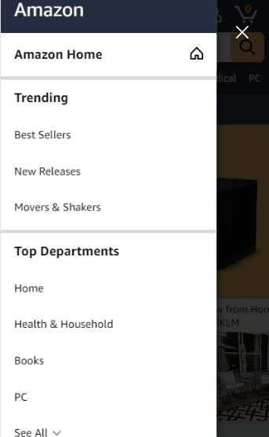
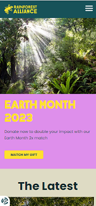

Hick's Law
Amazon
Hick's law allows us to make quicker decisions by giving us less visual stimuli. Websites that provide a clear and concise navigation or a simplistic design help us make choices faster and easier than one with clutter. For amazon.com, we see this on their sidebar navigation. It's easy to locate what you need as browsing options are few and simple. Imagine having to see a huge list of all the products amazon offers.
Contrast
Amazon
Contrast gives websites a way to be unique and attractive o our eyes. As we observe a webpage, it's colorful images and characters can pop out and draw our attention. Like on the website of the Rainforest-alliance, we see a contrast of a dark rainforest with a bright purple and yellow invitation to celebrate Earth Month. It's difficult to miss this invitation as my eyes quickly darted toward the eye-popping large text with bright colors.
Hick's Law
Apple
White space is very helpful for websites to clear up theclutter and look more professional. Many modern day websites use whitespace to appear modern or sophisticated, such as Apple. Apple employes whitespace very well, as their own website looks like an art gallery showing off each of their products like art pieces. Their products are known to be luxury items in the tech space for a good reason.